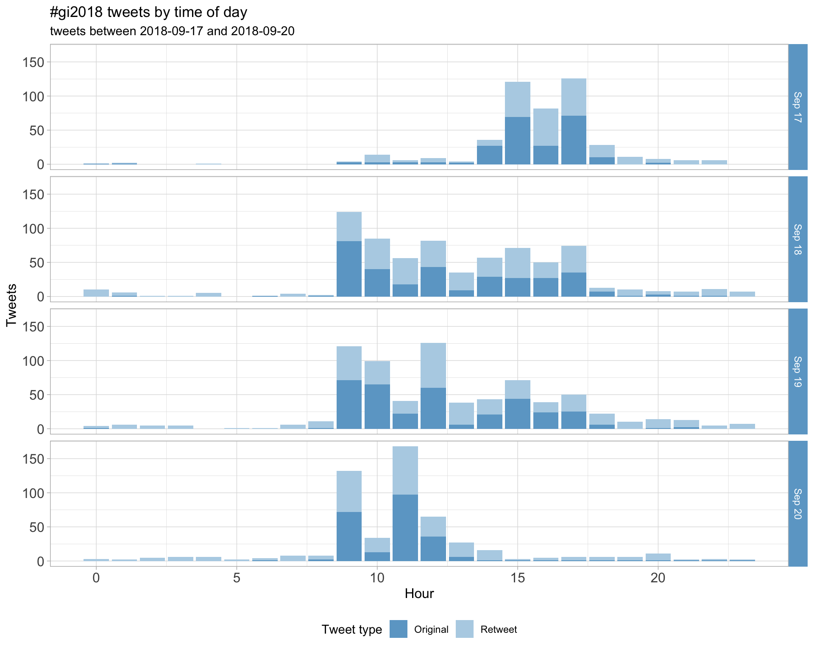
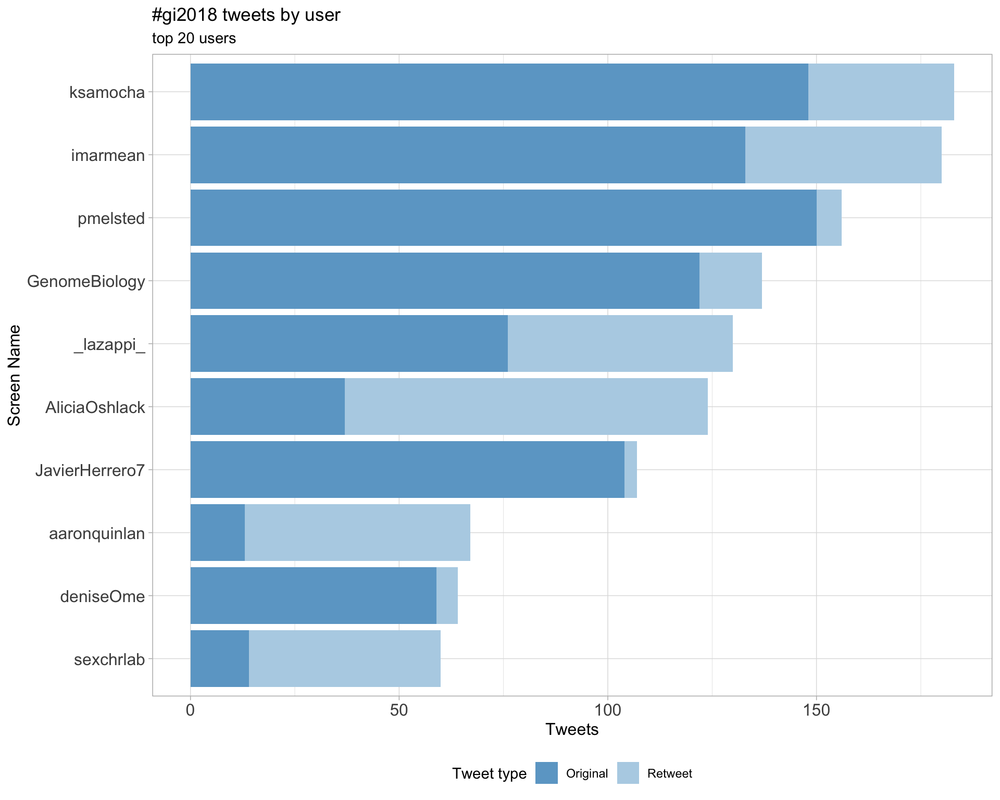
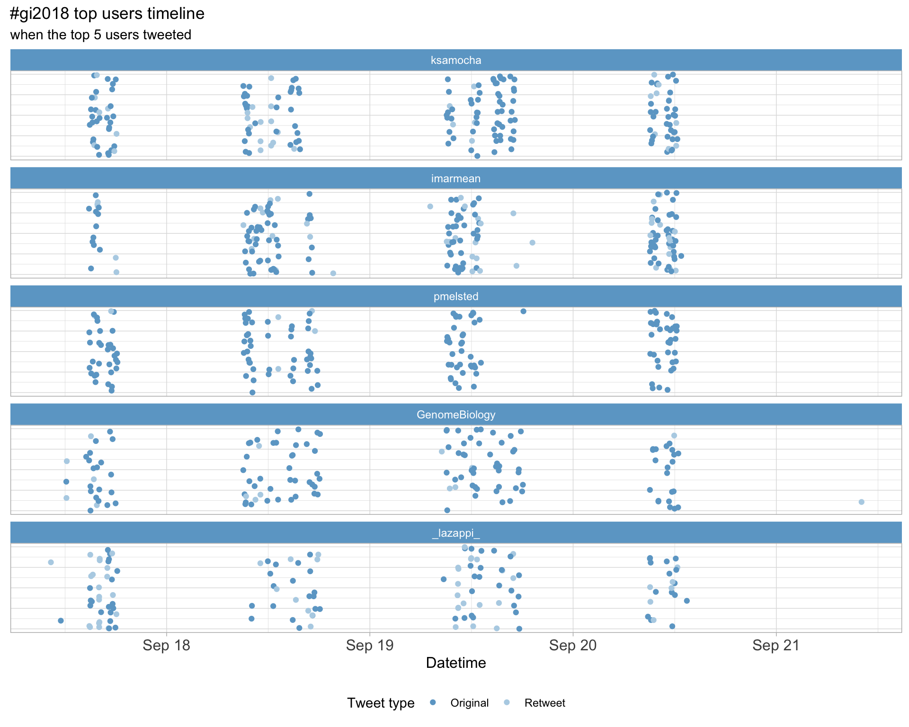
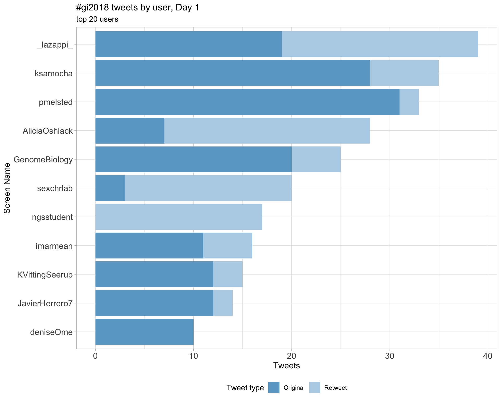
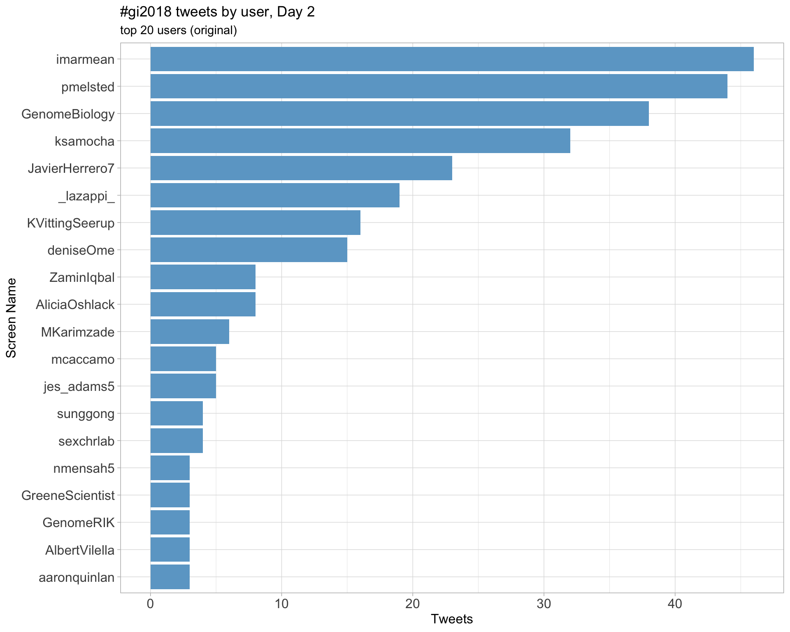
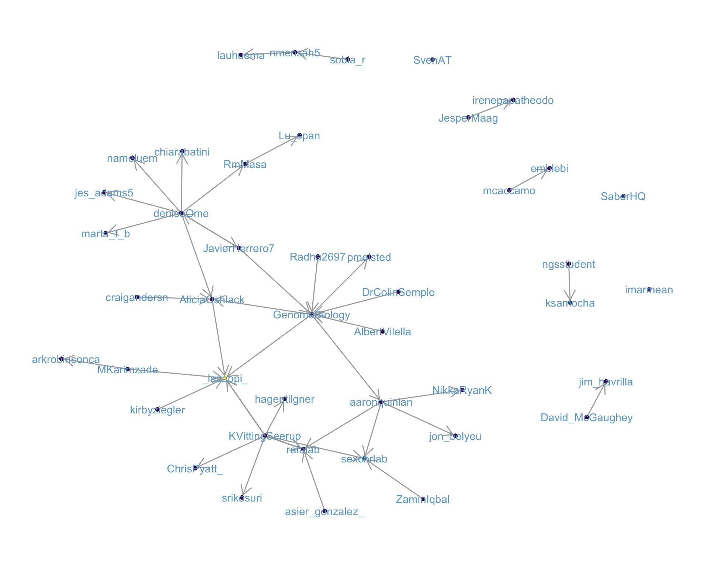
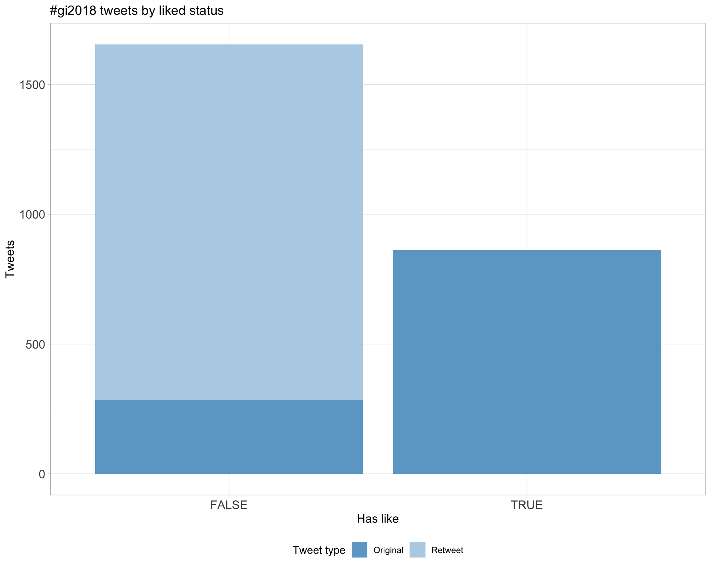
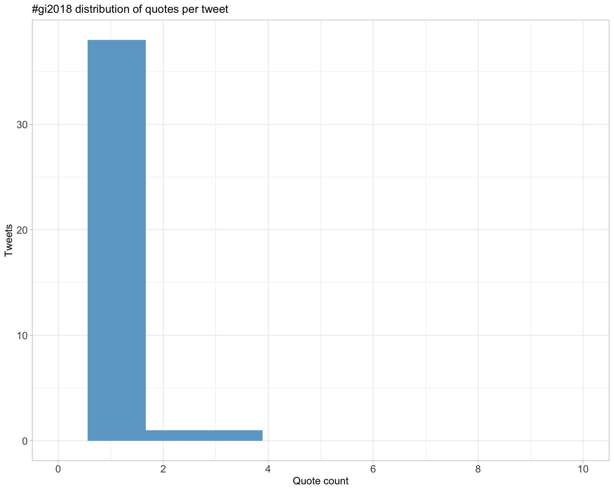
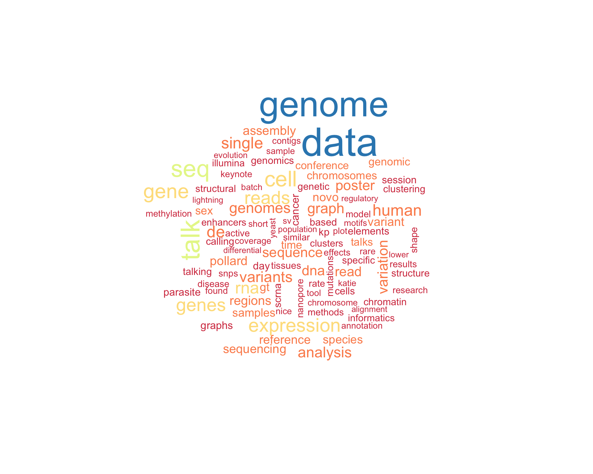

Twitter coverage of the Genome Informatics 2018 conference
Luke Zappia
2018-10-04 15:09:26
1 Introduction
An analysis of tweets from the Genome Informatics 2018 conference. 2516 tweets were collected using the rtweet R package:
2 Timeline
2.1 Tweets by day
2.2 Tweets by day and time
Filtered for dates 2018-09-17 - 2018-09-20 in the Europe/London timezone.

3 Users
3.1 Top tweeters

3.2 Top original tweeters

3.3 Retweet proportion

3.4 Top tweeters by time

3.5 Top tweeters by day
3.5.1 All tweets
Day 1

Day 2

Day 3

Day 4

3.5.2 Original tweets
Day 1
Day 2

Day 3
Day 4

3.6 Sources

4 Networks
4.1 Replies
The “replies network”, composed from users who reply directly to one another, coloured by page rank.

4.2 Mentions
The “mentions network”, where users mention other users in their tweets.

5 Retweets
5.1 Retweet proportion

5.2 Retweet count
5.3 Top retweets
| screen_name | text | retweet_count |
|---|---|---|
| aaronquinlan | RI’s Key points: 1. Be skeptical of thy data 2. Plot thy data 3. Plot it different ways: by data processed, by source, by batch, etc. #gi2018 | 57 |
| lazappi | Second #GI2018 keynote @rafalab “Variability in high throughput data” https://t.co/yukgjoHvSZ | 33 |
| lazappi | If you prefer your science in meme form here is one of the key points from @rafalab #GI2018 keynote this morning https://t.co/Xy9ra15Cd3 | 22 |
| sexchrlab | Genome Informatics #GI2019 November 6 - 9, 2019 Abstract Deadline: August 16, 2019 https://t.co/w7wLlPt6Uh #GI2018 | 21 |
| ksamocha | Laura Huerta #GI2018: Expression Atlas (https://t.co/vBdOlZP3Bn) is an open-access resource for gene expression data that has >3300 datasets currently. | 18 |
| lauhuema | Slides from my presentation about @emblebi @ExpressionAtlas at #GI2018 are available at @F1000Research in case anyone wants to have a look! https://t.co/hbCI1dPvyn https://t.co/cXUAPHq39w | 17 |
| AliciaOshlack |
I’ll be tweeting from #GI2018 which is getting underway in a few hours and I’m super excited! Program: https://t.co/gUIz4y6CgY Poster channel: https://t.co/xrktvzLo6G |
16 |
| JavierHerrero7 | .@GreeneScientist — After the controversy on ‘research parasites’ (see https://t.co/aBGwIlZAS5 and https://t.co/57AsQAWCvj), new awards for researchers re-using data at https://t.co/0UTHhiIG77. Deadline approaching fast (30 Sep) #gi2018 | 16 |
| imarmean | Sarah Teichmann on the exponential growth of single cell methods #GI2018 https://t.co/ByqAS2XT3P https://t.co/803Rj2Bv8k | 16 |
| sexchrlab |
Next at #GI2018 @srikosuri Reminding us that every person has 4-5 million deviations from the reference, pointing us to a preprint from the lab: Many rare genetic variants have unrecognized large-effect disruptions to exon recognition https://t.co/DACPefBheE |
15 |
6 Favourites
6.1 Favourite proportion

6.2 Favourite count

6.3 Top favourites
| screen_name | text | favorite_count |
|---|---|---|
| aaronquinlan | RI’s Key points: 1. Be skeptical of thy data 2. Plot thy data 3. Plot it different ways: by data processed, by source, by batch, etc. #gi2018 | 169 |
| lazappi | Second #GI2018 keynote @rafalab “Variability in high throughput data” https://t.co/yukgjoHvSZ | 110 |
| lazappi | If you prefer your science in meme form here is one of the key points from @rafalab #GI2018 keynote this morning https://t.co/Xy9ra15Cd3 | 57 |
| AliciaOshlack |
I’ll be tweeting from #GI2018 which is getting underway in a few hours and I’m super excited! Program: https://t.co/gUIz4y6CgY Poster channel: https://t.co/xrktvzLo6G |
46 |
| aaronquinlan | Thank you to everyone that attended and presented at this year’s #gi2018 meeting. The quality of the work was exceptionally high, and a sign of great things to come. Genome Informatics is in great hands with @sexchrlab and @AliciaOshlack. See you at #gi2019! | 46 |
| sexchrlab |
On my way to Genome Informatics 2018 #GI2018 The difference is gonna be like night and day. :) https://t.co/15B4de1wFB |
41 |
| ZaminIqbal | My awesome student Rachel Colquhoun @rmcolq talking about pan genome SNP/indel and variation calling in bacteria! (Primarily for @nanopore ) #GI2018 https://t.co/MAYfDbgwpX | 37 |
| AliciaOshlack | You might have noticed that the #GI2018 conference logo is actually a clustering tree by @_lazappi_ https://t.co/QhIFyFHnzU | 36 |
| imarmean | Barbara Englehardt (@BeEngelhardt) : Machine learning: biggest open question: could we have used logistic regression instead? Always ask yourself that! #gi2018 | 36 |
| AliciaOshlack | Hanging out in Cambridge with ⁦@sexchrlab⁩ after #GI2018 https://t.co/KlyidQQOAC | 32 |
7 Quotes
7.1 Quote proportion
7.2 Quote count

7.3 Top quotes
| screen_name | text | quote_count |
|---|---|---|
| deniseOme | .@ACSCevents. Looking forward to the 18th edition of #genomeinformatics on this beautiful @wellcomegenome campus. Will be live tweeting my #GI2018 impressions, peppered with some #OpenTargets @targetvalidate flavour. https://t.co/OjIxIbgmwo | 3 |
| HKhiabanian | Thrilled for the opportunity to present at #GI2018 on the results of our collaboration with Precision Medicine Program @RutgersCancer. Here are the slides for my upcoming talk: https://t.co/JbqHgwO04L https://t.co/ugUgKi9Vcv | 3 |
| ConnectingSci | Welcome to everyone arriving for #GI2018 today! https://t.co/bHloGWSdk9 | 3 |
| AliciaOshlack | The three commandments #gi2018 https://t.co/1MZv9JBxLD | 2 |
| Nicola_Lady | The ‚ÄúOur Father‚Äù of doing biological data analysis üôè. Enjoying following the #GI2018 tweets - keep em coming! https://t.co/Gj8HoMoejP | 2 |
8 Media
8.1 Media count
8.2 Top media
| screen_name | text | favorite_count |
|---|---|---|
| lazappi | Second #GI2018 keynote @rafalab “Variability in high throughput data” https://t.co/yukgjoHvSZ | 110 |
| sexchrlab |
On my way to Genome Informatics 2018 #GI2018 The difference is gonna be like night and day. :) https://t.co/15B4de1wFB |
41 |
| ZaminIqbal | My awesome student Rachel Colquhoun @rmcolq talking about pan genome SNP/indel and variation calling in bacteria! (Primarily for @nanopore ) #GI2018 https://t.co/MAYfDbgwpX | 37 |
| AliciaOshlack | You might have noticed that the #GI2018 conference logo is actually a clustering tree by @_lazappi_ https://t.co/QhIFyFHnzU | 36 |
| AliciaOshlack | Hanging out in Cambridge with ⁦@sexchrlab⁩ after #GI2018 https://t.co/KlyidQQOAC | 32 |
| GreeneScientist |
As a heads up, the title of my #GI2018 talk has changed. But feel free to tweet any of the content. I’ve exported PNGs of the slides in case you want to tweet about one or more of them: https://t.co/GoG64RH9zP https://t.co/FmvYSnWTlr |
27 |
| michaelhoffman | Loving the #GI2018 tweets but twitter needs a redundancy filter: https://t.co/J0izh4NktB | 27 |
| lauhuema | Slides from my presentation about @emblebi @ExpressionAtlas at #GI2018 are available at @F1000Research in case anyone wants to have a look! https://t.co/hbCI1dPvyn https://t.co/cXUAPHq39w | 27 |
| GreeneScientist | Now @rafalab is judging my #piechart at #GI2018. https://t.co/KWujRuWzuc | 25 |
| markrobinsonca | Front row at #gi2018 .. ⁦@rafalab⁩ https://t.co/rwu80kEtTA | 25 |
8.2.1 Most liked media image

9 Tweet text
The top 100 words used 3 or more times.
